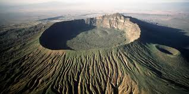
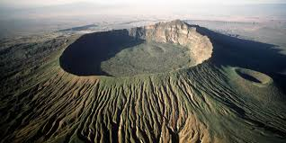
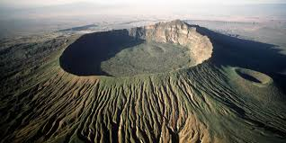

 

Happy Trails Travel is in a class of its own. A full service travel agency, Happy Trails handles both corporate and leisure travel. With over 60 years of combined experience Happy Trails is ready to handle all of your travel needs. Whether it's a SANDALS resort, luxury or adventure CRUISE, romantic getaway, HONEYMOON package or European vacation, we have been there and look forward to making your next trip a memorable and enjoyable one. So contact us today and get packing.
Our Offers.We have been at the same location for more than 27 years. One of our owner/agents has been in the travel business for over 45 years. Please Check Out the different destinations.
Uganda, officially the Republic of Uganda (Swahili: Jamhuri ya Uganda), is a landlocked country in East Africa. It is bordered to the east by Kenya, to the north by South Sudan, to the west by the Democratic Republic of the Congo, to the south-west by Rwanda, and to the south by Tanzania. The southern part of the country includes a substantial portion of Lake Victoria, shared with Kenya and Tanzania. Uganda is in the African Great Lakes region. Uganda also lies within the Nile basin, and has a varied but generally a modified equatorial climate.

Mexico, officially the Republic of Mexico (Swahili: Jamhuri ya Uganda), is a landlocked country in East Africa. It is bordered to the east by Kenya, to the north by South Sudan, to the west by the Democratic Republic of the Congo, to the south-west by Rwanda, and to the south by Tanzania. The southern part of the country includes a substantial portion of Lake Victoria, shared with Kenya and Tanzania. Uganda is in the African Great Lakes region. Uganda also lies within the Nile basin, and has a varied but generally a modified equatorial climate.
Sweden, officially the Republic of Sweden (Swahili: Jamhuri ya Uganda), is a landlocked country in East Africa. It is bordered to the east by Kenya, to the north by South Sudan, to the west by the Democratic Republic of the Congo, to the south-west by Rwanda, and to the south by Tanzania. The southern part of the country includes a substantial portion of Lake Victoria, shared with Kenya and Tanzania. Uganda is in the African Great Lakes region. Uganda also lies within the Nile basin, and has Sweden a varied but generally a modified equatorial climate.
Rwanda, officially the Republic of Rwanda (Swahili: Jamhuri ya Uganda), is a landlocked country in East Africa. It is bordered to the east by Kenya, to the north by South Sudan, to the west by the Democratic Republic of the Congo, to the south-west by Rwanda, and to the south by Tanzania. The southern part of the country includes a substantial portion of Lake Victoria, shared with Kenya and Tanzania. Uganda is in the African Great Lakes region. Uganda also lies within the Nile basin, and has a varied but generally a modified equatorial climate.
Malysia, officially the Republic of MAlaysia (Swahili: Jamhuri ya Uganda), is a landlocked country in East Africa. It is bordered to the east by Kenya, to the north by South Sudan, to the west by the Democratic Republic of the Congo, to the south-west by Rwanda, and to the south by Tanzania. The southern part of the country includes a substantial portion of Lake Victoria, shared with Kenya and Tanzania. Uganda is in the African Great Lakes region. Uganda also lies within the Nile basin, and has a varied but generally a modified equatorial climate.
Kenya, officially the Republic of kenya (Swahili: Jamhuri ya Uganda), is a landlocked country in East Africa. It is bordered to the east by Kenya, to the north by South Sudan, to the west by the Democratic Republic of the Congo, to the south-west by Rwanda, and to the south by Tanzania. The southern part of the country includes a substantial portion of Lake Victoria, shared with Kenya and Tanzania. Uganda is in the African Great Lakes region. Uganda also lies within the Nile basin, and has a varied but generally a modified equatorial climate.
SouthAfrica, officially the Republic of SouthAfrica (Swahili: Jamhuri ya Uganda), is a landlocked country in East Africa. It is bordered to the east by Kenya, to the north by South Sudan, to the west by the Democratic Republic of the Congo, to the south-west by Rwanda, and to the south by Tanzania. The southern part of the country includes a substantial portion of Lake Victoria, shared with Kenya and Tanzania. Uganda is in the African Great Lakes region. Uganda also lies within the Nile basin, and has a varied but generally a modified equatorial climate.
Created by MoringaPrepFT Student, 2018
Happy Trails Travel of Moringa Outbox Course
+256705611861.
Email: kedi@kedi.com